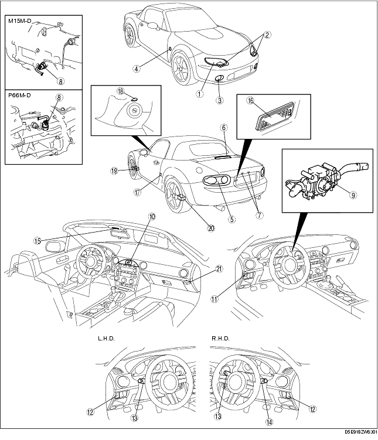

Workshop Manual ➭ BODY & ACCESSORIES ➭ LIGHTING SYSTEMS ➭ LIGHTING SYSTEMS LOCATION INDEX
LIGHTING SYSTEMS LOCATION INDEX
id091800463300
{: #wp1059776}

|
Front combination light {: #wp1059807} (See FRONT COMBINATION LIGHT REMOVAL/INSTALLATION.) {: #wp1059871} (See HEADLIGHT AIMING.) {: #wp1059885} (See HEADLIGHT BULB REMOVAL/INSTALLATION.) {: #wp1059899} (See PARKING LIGHT BULB REMOVAL/INSTALLATION.) {: #wp1059913} (See FRONT TURN LIGHT BULB REMOVAL/INSTALLATION.) {: #wp1059927} (See DISCHARGE HEADLIGHT SERVICE WARNINGS.) {: #wp1059941} |
|
|---|---|
|
2 {: #wp1059845} |
Discharge headlight control module {: #wp1059848} (See DISCHARGE HEADLIGHT CONTROL MODULE REMOVAL/INSTALLATION.) {: #wp1059965} (See DISCHARGE HEADLIGHT SYSTEM INSPECTION.) {: #wp1059979} |
|
3 {: #wp1059852} |
Front fog light {: #wp1059855} (See FRONT FOG LIGHT REMOVAL/INSTALLATION.) {: #wp1060003} (See FRONT FOG LIGHT AIMING.) {: #wp1060017} (See FRONT FOG LIGHT BULB REMOVAL/INSTALLATION.) {: #wp1060031} |
|
4 {: #wp1060043} |
Front side turn light {: #wp1060046} (See FRONT SIDE TURN LIGHT REMOVAL/INSTALLATION.) {: #wp1060084} |
|
5 {: #wp1060096} |
Rear combination light {: #wp1060099} (See REAR COMBINATION LIGHT REMOVAL/INSTALLATION.) {: #wp1060139} |
|
6 {: #wp1060151} |
High-mount brake light {: #wp1060154} (See HIGH-MOUNT BRAKE LIGHT REMOVAL/INSTALLATION.) {: #wp1060197} |
|
7 {: #wp1060209} |
License plate light {: #wp1060212} (See LICENSE PLATE LIGHT REMOVAL/INSTALLATION.) {: #wp1060256} |
|
8 {: #wp1060268} |
Back-up light switch {: #wp1060271} (See BACK-UP LIGHT SWITCH REMOVAL/INSTALLATION.) {: #wp1060318} (See BACK-UP LIGHT SWITCH INSPECTION.) {: #wp1060332} |
|
9 {: #wp1060344} |
Combination switch {: #wp1060347} (See COMBINATION SWITCH REMOVAL/INSTALLATION.) {: #wp1060397} (See COMBINATION SWITCH DISASSEMBLY/ASSEMBLY.) {: #wp1060411} |
|
10 {: #wp1060423} |
Hazard warning switch {: #wp1060426} (See HAZARD WARNING SWITCH REMOVAL/INSTALLATION.) {: #wp1060480} (See HAZARD WARNING SWITCH INSPECTION.) {: #wp1060494} |
|
11 {: #wp1060506} |
Flasher control module {: #wp1060509} (See FLASHER CONTROL MODULE REMOVAL/INSTALLATION.) {: #wp1060567} (See FLASHER CONTROL MODULE INSPECTION.) {: #wp1060581} |
|
12 {: #wp1060593} |
Headlight leveling switch {: #wp1060596} (See HEADLIGHT LEVELING SWITCH REMOVAL/INSTALLATION.) {: #wp1060658} (See HEADLIGHT LEVELING SWITCH INSPECTION.) {: #wp1060672} |
|
13 {: #wp1060684} |
Light switch (Left side of the column) {: #wp1060687} (See LIGHT SWITCH REMOVAL/INSTALLATION.) {: #wp1060753} (See LIGHT SWITCH INSPECTION.) {: #wp1060767} (See FRONT FOG LIGHT SWITCH INSPECTION.) {: #wp1060781} (See REAR FOG LIGHT SWITCH INSPECTION.) {: #wp1060795} |
|
14 {: #wp1060807} |
Light switch (Right side of the column) {: #wp1060810} (See LIGHT SWITCH REMOVAL/INSTALLATION.) {: #wp1060884} (See LIGHT SWITCH INSPECTION.) {: #wp1060898} (See FRONT FOG LIGHT SWITCH INSPECTION.) {: #wp1060912} (See REAR FOG LIGHT SWITCH INSPECTION.) {: #wp1060926} |
|
15 {: #wp1060938} |
Map light {: #wp1060941} (See MAP LIGHT REMOVAL/INSTALLATION.) {: #wp1061023} (See MAP LIGHT INSPECTION.) {: #wp1061037} |
|
16 {: #wp1061049} |
Trunk compartment light {: #wp1061052} (See TRUNK COMPARTMENT LIGHT BULB REMOVAL/INSTALLATION.) {: #wp1061138} (See TRUNK COMPARTMENT LIGHT INSPECTION.) {: #wp1061152} |
|
17 {: #wp1061164} |
Door switch {: #wp1061167} (See DOOR SWITCH REMOVAL/INSTALLATION.) {: #wp1061257} (See DOOR SWITCH INSPECTION.) {: #wp1061271} |
|
18 {: #wp1061283} |
Ignition key illumination {: #wp1061286} (See IGNITION KEY ILLUMINATION BULB REMOVAL/INSTALLATION.) {: #wp1061381} |
|
19 {: #wp1061393} |
Front auto leveling sensor {: #wp1061396} (See FRONT AUTO LEVELING SENSOR REMOVAL/INSTALLATION.) {: #wp1061492} |
|
20 {: #wp1061504} |
Rear auto leveling sensor {: #wp1061507} (See REAR AUTO LEVELING SENSOR REMOVAL/INSTALLATION.) {: #wp1061605} |
|
21 {: #wp1061617} |
Auto leveling sensor control module {: #wp1061620} (See AUTO LEVELING CONTROL MODULE REMOVAL/INSTALLATION.) {: #wp1061720} |